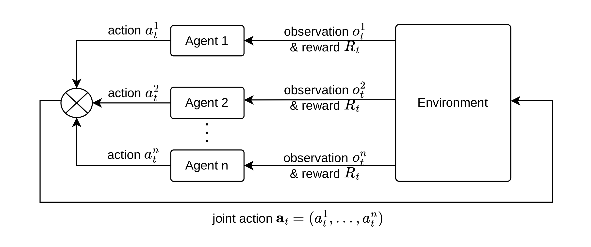
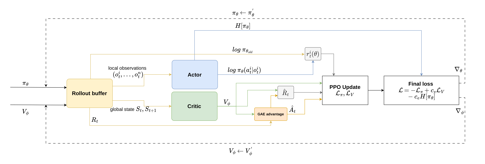
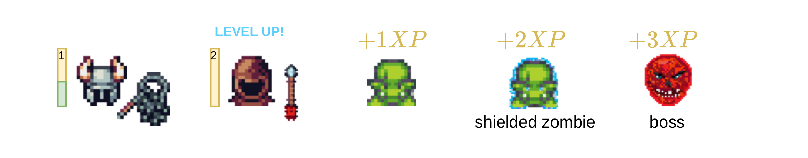
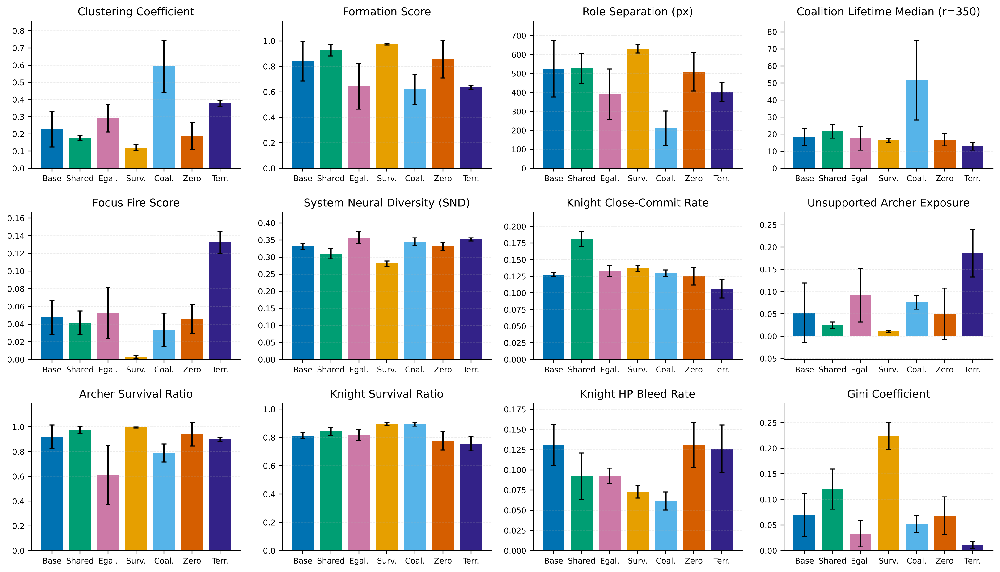
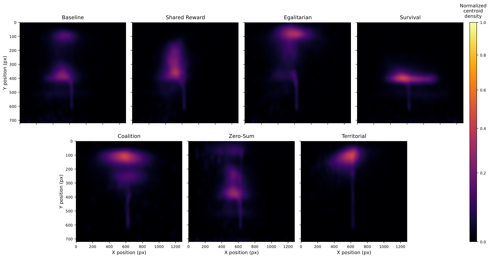

Emergent Coalitions in MARL
This Bachelor's thesis investigates whether agents in a multi-agent reinforcement learning environment can form coalitions, coordinate with each other based on reward schemes, environment mechanics such as vision radius, or learning mechanics such as different parameter sharing paradigms.
We ask hypotheses such as: do different reward functions produce genuinely different coordination styles, or just shift performance. Do intuitive proxies (focus fire, cohesion, behavioural diversity) actually predict which teams survive. How much of what emerges is reward design, and how much is the environment's mechanics?
How do we measure and evaluate the emergence of coalitions in MARL settings? We develop a quantitative metrics framework covering spatial structure, attack coordination, behavioral differentiation, and fairness. A single metric cannot tell the whole story, therefore to capture aspects of agent's behavior, we interpret these metrics together.
A Replay Browser was also built to visualize independent episode replays for more qualitative and intuitive interpretation.
MARL Theory
Multi-agent RL extends the single-agent setting into environments where several agents learn at the same time. This creates problems such as non-stationarity (agents are learning while other agents are learning too), credit assignment (when a team reward is given, which agent caused it?), and partial observability (each agent only sees a local part of the map).

The MARL loop. Joint actions modify a shared environment state.
We use Multi-Agent PPO with the Centralized Training, Decentralized Execution paradigm. A centralized critic can use the full global state during training, while each actor only receives its own local observation. During execution the critic is removed, therefore agents must act only from local information.

MAPPO data flow. Rollout buffer → local obs to actor, global state to critic → GAE → clipped policy update.
We also compare different parameter sharing paradigms. Agents can have independent networks, share one network per role, or share a single network for all agents. The type-shared setup is used as the main setting because it preserves role differences while still sharing experience inside each role.

Non-shared · type-shared · fully shared. Same brain colour = same network.
The Environment
Knights, Archers, Zombies is a PettingZoo grid-world environment where knights and archers defend the bottom of the screen from descending zombies. The environment has four agents, two roles, and six discrete actions.
The original environment was too easy to solve, therefore it was modified. Boss enemies appear every 200 steps and increase a wave counter, which raises zombie and boss HP. Agents gain XP and HP from kills, so falling behind affects future survival. Shielded zombies can only be broken by knights, therefore when all knights die, shielded zombies become impossible to stop and the roles become mutually dependent.

Custom KAZ with leveling, shielded zombies, and a boss tier.
The original PyGame implementation was too slow for training runs with about 328M frames. Therefore the environment was rewritten in JAX as pure functions over immutable state, jit-compiled, and vmap-ed across 256 parallel environments. This reaches about 130k FPS on a single GPU, so a full training run finishes in under four hours.
Seven reward schemes. Environment mechanics, observations, and termination stay fixed. Only the reward function changes, therefore reward design becomes the experimental lever.
Baseline. Agents receive only base kill rewards, so any coordination here comes from the environment structure itself.
Shared Reward. 50% of kill rewards are pooled between attackers. If an archer kills a zombie while a knight is attacking nearby, the knight also receives part of the reward.
Egalitarian. The reward penalizes XP inequality using Gini coefficient and gives a catch-up bonus to the agent with the lowest XP.
Survival. Agents receive a per-step alive bonus and all agents are penalized when a teammate dies.
Coalition. 70% of a kill reward is shared with alive allies within 200 px, so spatial closeness is directly rewarded.
Zero-Sum. The killer gains reward, while other agents receive an equal penalty. Helping another agent therefore has a cost.
Territorial. The screen is split into two halves. Archers are assigned left, knights are assigned right, with bonus inside the lane and penalty outside.

Baseline · Shared · Egalitarian · Survival. Arrows = attacks; red = killing blow.

Coalition · Zero-Sum · Territorial.
Measuring Emergent Behavior
Two teams can reach similar total reward while using different coordination structures. Reward curves alone cannot distinguish this. Therefore we evaluate trained policies using twelve post-hoc metrics on evaluation trajectories, grouped into three areas.
Spatial structure. We measure clustering coefficient (pairs within 200 px), formation score (are knights in front of archers?), role separation (distance between role centroids), and coalition lifetime median (how long pairs stay within 350 px).
Clustering coefficient. \( C_t = \frac{1}{|P_t|} \sum_{(i,j) \in P_t} \mathbf{1}\{ \lVert \mathbf{p}_i(t)-\mathbf{p}_j(t)\rVert_2 < r_c \} \)

Clustering · formation · role separation, visualized on a single frame.
Coordination & engagement. We measure focus fire score (are multiple agents attacking the same enemy?), System Neural Diversity (JS divergence between action distributions), and knight close-commit rate (do knights commit when close?).
Focus fire. \( FF_t = \frac{1}{|T_t|} \sum_{i \in T_t} \mathrm{coord}_i(t) \)
Protection & balance. We measure unsupported archer exposure, survival ratio per role, knight HP bleed rate, and Gini coefficient of late-episode XP.
Survival ratio. \( SR_{\mathcal{C}} = \frac{1}{T|\mathcal{C}|} \sum_{t=1}^{T} \sum_{i \in \mathcal{C}} \mathbf{1}\{\mathrm{alive}_i(t)\} \)
A custom replay browser complements these metrics. It allows frame-by-frame playback with metric overlays, so quantitative results can be compared with what agents actually do in the environment.
Training & Analysis
Seven reward policies, five seeds, type-shared parameters, and 400 px vision radius give 35 primary runs. We also run 35 unlimited-vision experiments, 70 experiments across different parameter sharing paradigms, and 35 environment ablations. Each run uses 10 000 MAPPO updates, 256 parallel environments, and about 328M frames.
Pick a policy. Each reward scheme produces a measurably different coordination regime.
Survival Shared Reward Coalition Baseline Egalitarian Zero-Sum Territorial
Results.
Final bars Training curves Vision radius Param-sharing

Final deterministic evaluation: 12 metrics, 7 policies, 5 seeds each. Bars = mean, error bars = std.
Centroid heatmaps. Where does the team's centre of mass spend most of the episode?

Survival holds a wide horizontal band deep in the map. Coalition stays compact up top. Baseline and Zero-Sum are near-identical. Territorial never lands a clean split.
What actually predicts durability. Spearman correlation with episode length, across all seed-level evaluations:
| Metric | Spearman ρ |
|---|---|
| knight survival ratio | +0.83 |
| focus fire score | −0.80 |
| Gini coefficient | +0.75 |
| knight HP bleed rate | −0.69 |
| knight close-commit rate | +0.63 |
| unsupported archer exposure | −0.60 |
Focus fire and SND look like intuitive coordination proxies, but they are negatively correlated with episode length. The strongest predictor is knight survival. After removing between-policy variance, spatial metrics lose significance. This suggests that durability is mostly explained by knight-side burden management, not surface coordination signals.
The twist: archers can break shields. If knight-survival dominance is real, it should weaken when archers can also break shields. All seven policies re-trained under that rule:
| Policy | Before | After | Note |
|---|---|---|---|
| Shared Reward | 608.8 | 668.3 | now best |
| Coalition | 583.3 | 633.8 | |
| Territorial | 431.7 | 525.2 | biggest gain |
| Survival | 701.1 | 572.9 | loses its lead |
The same reward functions produce different spatial organizations under different environment rules. Survival's separated frontline-backline style was therefore an adaptation to shield asymmetry, not an inherently better coordination regime.
Cross-play & leave-one-out. What happens if archers from one policy are paired with knights from another? 41 of 42 off-diagonal pairings perform worse than self-play. These regimes are therefore distinct, not interchangeable. We also remove one agent and measure the performance drop:
| Policy | Removed agent | Δ episode length |
|---|---|---|
| Survival | knight | −451 steps |
| Shared Reward | knight | −360 |
| Coalition | knight | −321 |
| Territorial | knight | −122 |
| Shared Reward | archer | −2 |
| Zero-Sum | archer | −4 |
Every policy is knight-critical. Archer importance is more regime-dependent.
Conclusion
Reward design does not only shift performance. It also changes which coordination regime stabilizes. Survival forms a separated frontline-backline structure, Coalition keeps agents close together, and Shared Reward spreads agents more aggressively. Each can be competitive, but through a different mechanism.
Intuitive proxies such as focus fire, behavioural diversity, and spatial cohesion describe which regime a policy occupies, not necessarily how well it performs. What predicts durability is knight-side burden management. Even this depends on a specific environment asymmetry, because once archers can break shields, the best regime changes.
Type-shared parameters outperform both alternatives for every reward scheme. Limited vision (400 px) helps five out of seven policies, suggesting that more information is not always better and can distract from local decisions that matter.
For the full story, including RL foundations, MAPPO derivations, hypothesis evaluation, ablations, and limitations, read the thesis.